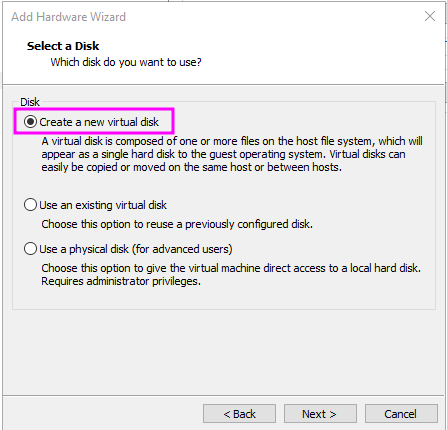
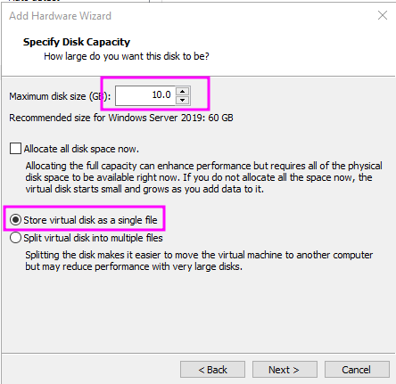
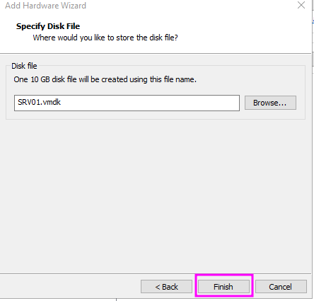
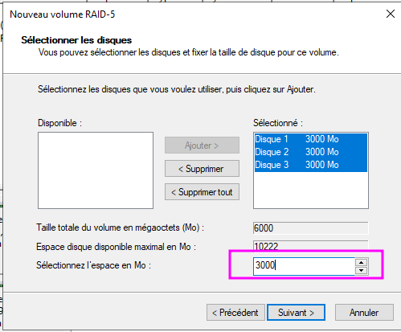
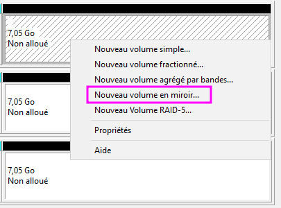
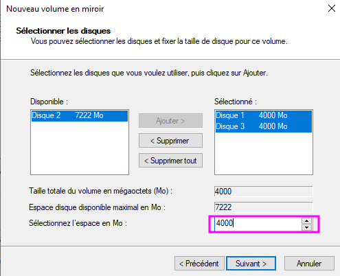

ENI TSSR 09 - Services Réseaux Windows
TP 02 - Gestion du stockage (RAID)
Objectifs
Gérer l’ajout d’espace disque et le partitionnement sous Windows.
Prérequis
disposer des VM installées dans le TP1.
Résumé des paramètres
| Machine | Utilisateur | mdp | ip | OS | CPU | RAM | NIC | HDD |
|---|---|---|---|---|---|---|---|---|
| Modele_SRV | Administrateur | !Admin123 | 172.23.17.1 | Win Srv 2019 Std | 1x1 | 4 Go | Host-Only | 1x 32 Go |
| CD01 | Admin | !Admin123 | 172.23.17.1 | clone Modele_SRV | 1x1 | 4 Go | Host-Only | 1x 32 Go |
| SRV01 | Admin | !Admin123 | 172.23.17.2 | clone Modele_SRV | 1x1 | 4 Go | Host-Only | 1x 32 Go |
| W10 | Admin | !Admin123 | 172.23.17.11 | Win 10 Pro | 2x1 | 2 Go | Host-Only | 1x 32 Go |
*ATTENTION NE PAS REDEMARRER LES MODELES UNE FOIS CLONÉS !
Ajout de disques “physiques” au serveur
Instructions
Ajouter 3x disques SCSI de taille dynamique de 10 Go chacun sur le serveur SRV01.
Mode opératoire
- Dans VMWare Workstation, sélectionner la VM SRV01, clic sur Edit Virtual Machine Settings
- Cliquer sur le bouton Add pour ajouter des disques durs
{kind=link}
- Sélectionner Hard drive puis l’option SCSI
-
Créer un disque entier Create a new virtual disk 
-
Sélectionner la taille 
-
Laisser l’emplacement par défaut pour enregistrer dans le répertoire de la VM 
-
Répéter l’opération jusqu’à avoir 3 disques supplémentaires
{kind=link}
{kind=link}
{kind=link}
Expression des besoins de stockage
RAID-5
Instructions
En vue de stocker les documents de travail des utilisateurs, créer un volume en RAID-5 pouvant héberger environ 6 Go de données appelé Données et accessible depuis le lecteur D:\
Mode opératoire
- Sur SRV01, executer diskmgmt.msc, le Gestionnaire de disque.
- Au démarrage, une pop-up s’affiche, demandant d’initialiser les 3 disques ajoutés. Sélectionner Partition GPT puis OK. Remarque: si rien ne s’est affiché, clic-droit sur un des nouveaux disque > Initialiser le disque.
- Modifier la lettre du lecteur optique (actuellement D:) pour pouvoir l’affecter ailleurs. Clic droit sur le lecteur > Modifier la lettre > Choisir une lettre au pif (ex. Z).
- Clic droit sur un des nouveau disque > sélectionner Nouveau volume RAID-5
- Selectionner les 3 disques dans la partie Disponible > cliquer sur le bouton Ajouter
-
Indiquer l’espace souhaité en Mo. Ici, nous voulons une taille totale d’environ 6 Go, donc, en tenant compte de la nature du RAID-5 (2 disques + 1 miroir), nous devons indiquer 3000 Mo. 
-
Attribuer une lettre au lecteur et un nom de volume.
{kind=link}
- clic Suivant > Terminer > Répondre Oui au message d’avertissement
RAID-1
Instructions
- Les membres du service Informatique doivent pouvoir accéder à tout moment aux outils d’administration système.
- Créer un volume miroir de 4 Go monté dans C:\INFO-TOOLS et reposant sur les disques 1 et 3.
Mode opératoire
- Dans le Gestionnaire de disques (diskmgmt.msc)
-
Clic droit sur un des espaces non-alloué > Nouveau volume en miroir 
-
Dans la partie Disponible, selectionner les disques 1 et 3 puis clic Ajouter
-
Leur attribuer 4000 Mo d’espace. 
-
Selectionner Monter le dossier NTFS… et parcourir jusqu’à l’emplacement voulu.
- Créer le dossier si besoin.
- Formater.
{kind=link}
{kind=link}
RAID-0
Instructions
- Une base de données SQL Server d’une taille maximale de 8 Go sera hébergée sur le serveur.
- Créer un volume optimisé pour les performances en lecture/écriture, nommé Database et accessible via le Lecteur E:\
Mode opératoire
- Dans le Gestionnaire de disques (diskmgmt.msc)
- Clic droit sur un des espaces non-alloué > Nouveau volume agrégé par bandes
- Selectionner les 3 espaces non-alloués restants
- Attribuer 3222 Mo (la totalité dispo)
- Sur l’écran suivant, attribuer la lettre E:
- Sur l’écran suivant, sélectionner Formater… en précisant le nom de volume Database.
- Cliquer Terminer
Résultat final :
{kind=link}
Configuration du stockage sur le serveur
- Créer les volumes correspondants aux besoins via la console de Gestion des disques.
- Stocker des fichiers quelconques sur l’ensemble de vos lecteurs.
Simulation de panne
Instructions
Depuis les paramètres de la VM, supprimer le disque SCSI no. 3 puis observer les changements dans la console de Gestion des disques, ainsi que dans le Gestionnaire du serveur.
Questions
Q: Peut-on accéder aux données stockées sur Données ? Apparemment oui mais je suis pas sûr d’avoir supprimé le bon disque…
Q: Peut-on accéder aux données contenues dans C:\INFO-TOOLS ? Pareil…
Réparation des volumes défectueux
Instructions
Ajouter un disque supplémentaire depuis le Gestionnaire de ma VM puis réparer les volumes défectueux depuis la console de Gestion des disques.
Mode opératoire
- Supprimer le miroir car l’autre disque est tombé. (clic droit > supprimer le miroir)
- Puis recréer en RAID-0 (miroir)
Bonus Powershell
Créer les volumes avec PowerShell (pour cela, supprimez puis recréez de nouveau les trois disques SCSI).
Note : c’est pas avec PS mais avec DISKPART donc non, merci.
- Initialisez les disques
- Créez les volumes
- Formatez les volumes
- Peuplez vos volumes avec des données quelconques via l’explorateur Windows par exemple
- Simulez une panne en retirant un disque depuis le gestionnaire Hyper-V
- Testez l’accès à vos fichiers hébergés sur vos volumes
- Réparez les volumes défectueux
Remarque Powershell : réflexe “update-help” !
Mettez à jour l’aide PowerShell. La MAJ est disponible sur \\10.X.0.6\Distrib\Depot\PowerShell
Pour atteindre Distrib depuis SRV01, changez temporairement de vSwitch :
- Branchez votre VM sur le vSwitch Bridged
- Configurez votre VM en DHCP
- Une fois l’update effectuée, rebranchez votre VM sur le vSwitch Host-Only
- Reconfigurez l’adresse fixe IPv4 de SRV01 (172.23.X.2/24)